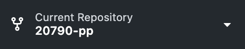

Using Git
Abstract
This page teaches FTC teams how to best use Git for their robot code.
Note
This guide uses the Git CLI, and GitHub Desktop. If you opt to use a different client, refer to its documentation.
Resources
About Git
Git is a version control system for your code that manages changes over time. It makes it easier for multiple people to work on code together, keeps track of your edits, and allows you to roll back to working code if something breaks.
Mind the Platform
This guide assumes you are using GitHub as your Git server. If you are using a different platform (such as GitLab), most of the Git-related steps are still the same, but there may be some variations.
Git Lingo
| Term | What It Means |
|---|---|
| Repository (repo) | A project folder managed by Git |
| Commit | A saved snapshot of your code at a specific moment |
| Branch | A separate workspace for working on new features |
| Merge | Combining changes from one branch into another |
| Pull/Push | Downloading (pull) or uploading (push) changes between your local repo and GitHub |
| Organization | A group of repositories all managed and owned by multiple people |
Advantages of Git
Using Git, especially in the FIRST Tech Challenge has many advantages, such as:
- Allowing for quick and easy rollbacks if a mistake is made
- Making it easier and safer for multiple people to work on a codebase
- Recording a history as the code evolves, which can potentially be used as evidence for awards
- Making experimenting safer, as new ideas can be tried in a different branch without breaking the main code
Getting Started with Git for FTC
Now that you've opted to use Git for your code, let's get you and your programmers ready to contribute and make new code!
Written for FTC
These instructions for setting up Git are designed specifically for use in the FIRST Tech Challenge. They may not apply for other applications.
Setting Up GitHub
- Instruct your programmers to create a GitHub account if they haven't already.
- Create a GitHub organization.
- Invite the rest of your programmers to the organization.
- Create your repositories for your code.
Install Git
Have your programmers follow these instructions to set up Git on their system if they haven't already:
-
Download and install Git for your operating system.
Download Git Even If Your IDE Has It
Even if your IDE (such as Android Studio and Visual Studio Code) has Git support built-in, it's still a good idea to have a dedicated install of Git, as many IDEs don't support the full feature set of Git.
Try a GUI
Use a GUI if you aren't familiar with the command line interface, as the CLI can be more intimidating to use at first. You can find a list of GUIs here. If you don't know which one to pick, start with GitHub Desktop.
-
Use the documentation for your client to sign into your GitHub account.
Clone the Repo
Keep One Clone!
If you have already cloned your repository in your IDE (or another Git client), do not clone the repository again. Instead, add the existing repository to your Git client. If you have multiple Git clients installed, you have to add the repository to each client.
Now that you have a repository for your code, now it's time to save the code to the programmer's computer.


Your Platform Matters
You may need to look up specific instructions regarding Git and your terminal, depending on your operating system and shell.
- Open your terminal app.
- Run the necessary commands to navigate to the folder you want to store the code in.
- Copy the URL to the repository you want to clone.
-
Run:
- Replace
pasted-linkwith the link to your repository.
- Replace


- Click the
Current Repositoryoption.
 - Click
Add, thenClone Repository.


- Search for your repo in the list, or paste in the URL.


- Set the path you want the repository to clone to.
- Click
Clone.
Using Your Repo
Now that you have a repo, it is time to put it to use.
Info
This part of the guide will assume you are using your repo for your robot code. However even for other projects you and your team make on Git, it is still a good idea to follow our advice.
Using Branches
Branches allow you to work on new code and features while leaving your working code untouched. As a result, it makes it easier to experiment with new features without disrupting the working code. Using branches effectively is key to ensuring easy collaboration and keeping the robot code stable.
What if I am the only one working on the repo?
You should still use branches as it allows you to safely experiment with the code. Additionally, as you are in a team, you will likely have future collaborators.
Your main branch is where you should keep your working and stable code. If you are working on the robot's code and sudddenly you need to use the stable code for some reason (troubleshooting, outreach, competition, etc.), you should always be able to switch main and push your working code.
Info
Your main branch may also go by a different name, such as master. For the sake of simplicity, we will assume your safe branch is called main.
No Unfinished Work In main!
Never allow incomplete files to end up in main. On the robot code, errors in just one file can render the entire codebase useless, since just a single bad file can and will cause the Java build to fail.
When you wish to make a change to the code, create a new branch for said change. Make sure your branch names have a meaning. After switching to your new branch, you can safely change or build up your feature without the risk of breaking your working code. Once you have tested your changes and you know it works, you can merge it into main.
Improving The Auto
Let's say your team wants you to improve the autonomous of the robot.
- Create a new branch from
maincalledauto-improvement. - Switch to
auto-improvement. - Make changes and commit as needed.
- Test your code to ensure it's robust and complete.
- Once it's tested and you know it works, merge your code into
main.
By following these steps, you didn't touch your main branch until the changes were complete.
Commiting
A commit is a snapshot of your code. When you make a commit, Git will record:
- What was changed
- Who made the change
- The time and date it happened
- A written message explaining the change
Generally, you should commit after making a working, logical change in your code. You should be able to fall back on your previous commit if something breaks. It's better to make too many commits than too little, as you can always squash commits later.
What is a squash?
When you squash commits, you are combining multiple commits into one. It's a good way to clean up your commit history if you commited too many smaller changes as part of a larger logical change. Consult the documentation for your Git client for information on how to squash commits.
Positive Examples On When To Commit
- Fixed a bug or problem in the code
- Added a new path to the auto
- Updated the code to support a change in the hardware
Don't Dump Your Work In One Commit!
Make sure to commit small, testable changes. That way if something breaks, it's easier to determine what went wrong and how to fix it. Additionally, it makes it easier to roll back your code during development if something goes wrong. Remember, if you truly made too many commits, you can always squash them later.
Once you have made a logical change, it is now time to commit your code and write a message. Here are some guidelines on writing commit messages:
- Explain what you changed, and why you changed it
- Use present tense, not past tense
Remember, you are leaving a note for not just yourself, but for your teammates, even if they don't code. For example, your drivers may want to know what changed between their practice sessions, or your engineers may want to know how you changed the usage of their component. Additionally, keeping a detailed history of your code will make it easier for your team to write about your code's history in the engineering portfolio, which can be very helpful for awards such as the Control Award.
Don't Disregard Commit Messages Even If You Plan To Sqash
Even if you plan on squashing your commits later, it is still a good idea to write descriptive commit messages, as some git clients will preserve them in the extended description. Additionally, it will make it easier to know which commits to squash together.
Positive Commit Message Examples
- Add PID constants for drivetrain turning
- Fix the inverted controls after a hardware update
Now that you have changes you want to commit, and you know how to write a commit message, it's now time to actually commit your changes.
To create a commit of your code in the Git CLI, run:
- Running this line as-is will add all changes and files to the commit. If this behavior is not desired, replace
allwith the file you wish to add. - Replace
Your commit messagewith the message you wish to attatch to the commit.
To create a commit of your code in GitHub Desktop,
-
Select the files you wish to add to your commit in the left pane.
Staging Individual Lines
You can include or exclude individual lines of code by clicking on the file itself (not the checkbox) and clicking the checkbox next to the line(s) of code.
-
Write your commit message in the summary field. You can optionally add an extended description in the box below.
Generating Commit Messages Automatically
GitHub Copilot can automatically generate a commit message for you. To do so, make sure the changes you want to commit are already selected, then press the Copilot icon to automatically generate a summary and description. Make sure to review the text it writes.
-
Click the blue commit button.
Merging
Once you have finished your change and you know it works properly, it is now time to merge your changes upstream to combine it with the working code. When you merge your code from another branch, you are simply adding the changes from your branch to the target branch.
Pull Requests
A pull request (PR) is a formal method of merging code upstream. For teams new to GitHub, this is the safest way to ensure your merge doesn't break the code, especially if other changes have been taking place at the same time, as you can simply just checkout the PR and test it.
Organizing Your Repo
- Consider using GitHub issues for task tracking
- Use
.gitignoreto prevent unnecessary files from clogging up your repo, such asDS-Store.